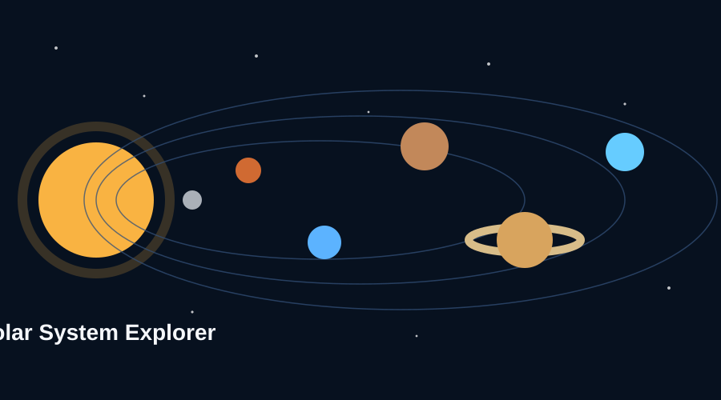

Rocky Worlds
The Moon and Mars show how rocky bodies can preserve craters, dust, valleys, and signs of earlier solar system history.
A student-made guide to several worlds in our solar system, built with original images, responsive design, and inline references.
The solar system includes the Sun, eight planets, dwarf planets, many moons, asteroids, and comets. This website focuses on five useful stops for a beginner space tour: Earth's Moon, Mars, Jupiter, Saturn, and a comparison page. NASA Solar System Facts
The design is consistent across every page, and each page includes student-written explanations instead of copied text. The navigation highlights the page you are currently viewing.
Start with the Moon
The Moon and Mars show how rocky bodies can preserve craters, dust, valleys, and signs of earlier solar system history.
Jupiter and Saturn are much larger than Earth and are known for thick atmospheres, storms, rings, and many moons.
The final page includes a new table and a styled form with more than four fields, meeting the technical requirements.